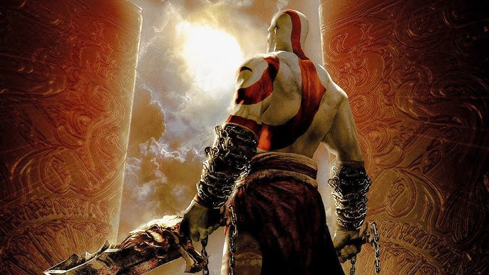
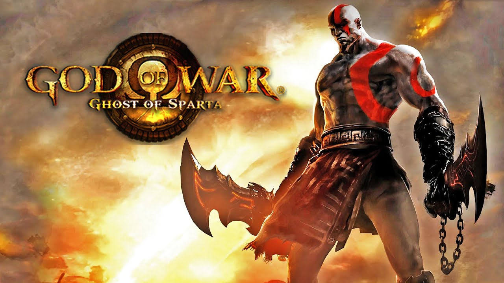
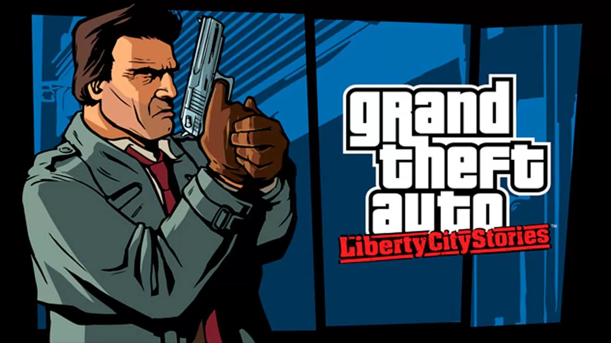
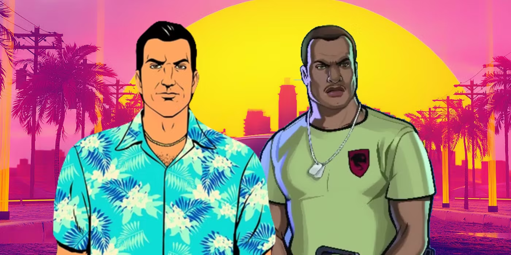
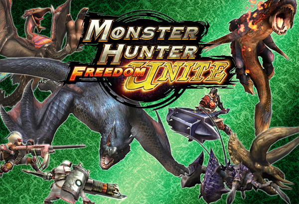
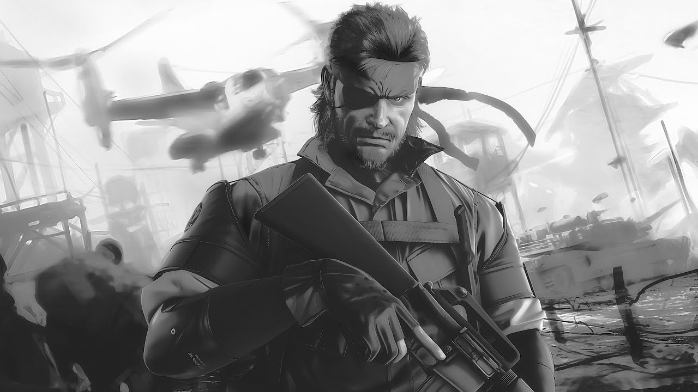
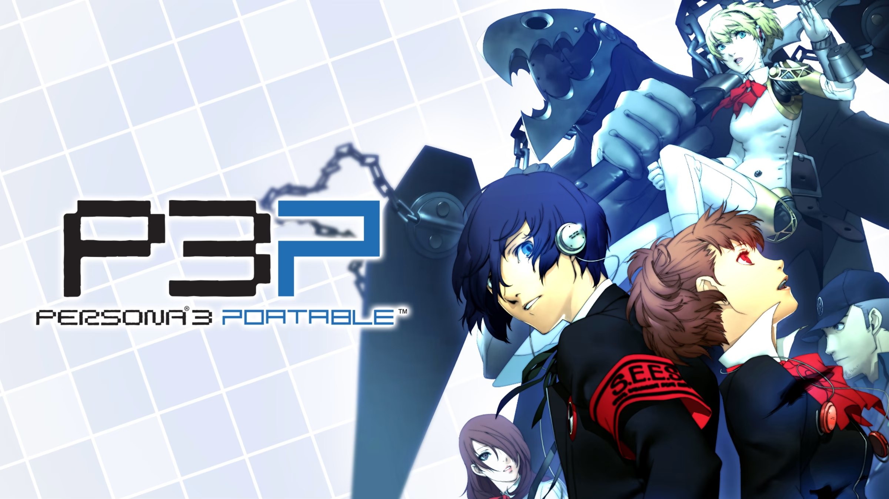
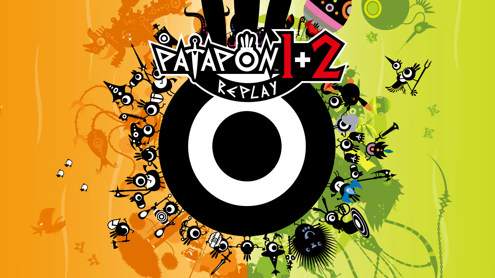

PlayStation
PlayStation é uma marca de consoles de videogame criada pela Sony, que começou com o lançamento do primeiro console em 1994. A marca é conhecida por sua linha de consoles de diferentes gerações, serviços online como a PlayStation Network (para jogar online e baixar jogos) e uma vasta biblioteca de títulos exclusivos.
Top 10 Jogos do PlayStation Portable
-

- God of War: Chains of Olympus
- God of War: Ghost of Sparta
- Grand Theft Auto: Liberty City Stories
- Grand Theft Auto: Vice City Stories
- Crisis Core: Final Fantasy VII
- Monster Hunter Freedom Unite
- Metal Gear Solid: Peace Walker
- Persona 3 Portable
- Daxter
- Patapon
Kratos no portátil, brutal e épico, com gráficos insanos pro PSP. Um dos mais lembrados do console.
Continuação ainda mais polida, com história profunda e combate refinado. Muitos consideram o melhor jogo do PSP.
Primeiro GTA exclusivo pro portátil. Mundo aberto completo, praticamente um GTA III na palma da mão.
Expansão do universo de Vice City, com história inédita e jogabilidade bem trabalhada.

Prequel do lendário FFVII, contando a história de Zack Fair. RPG incrível, com narrativa emocionante.
Explodiu no Japão e ganhou fãs no mundo todo. O game que consolidou o PSP como máquina de caçar monstros em equipe.
Produzido pelo próprio Hideo Kojima, história densa, stealth refinado e multiplayer cooperativo. Top demais.
Versão portátil do RPG cult, com sistema social + batalhas estratégicas. Virou referência nos JRPGs.

Spin-off da série Jak and Daxter. Plataforma criativa, leve e muito divertido. Virou clássico instantâneo do PSP.
Estratégia + ritmo com estilo visual único. Jogar marchando os guerreiros no compasso do tambor foi uma das experiências mais originais do portátil.
Mais de PlayStation
PlayStation 1PlayStation 2
PlayStation 3
PlayStation 4